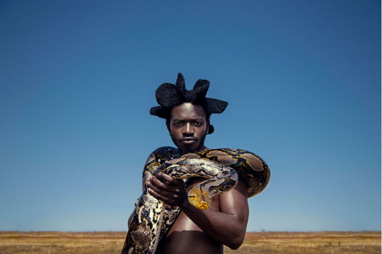
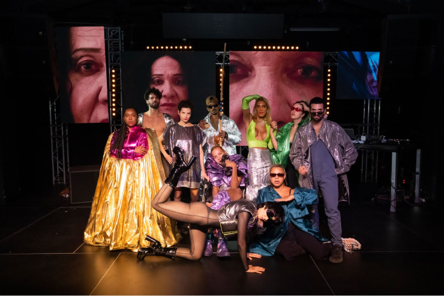
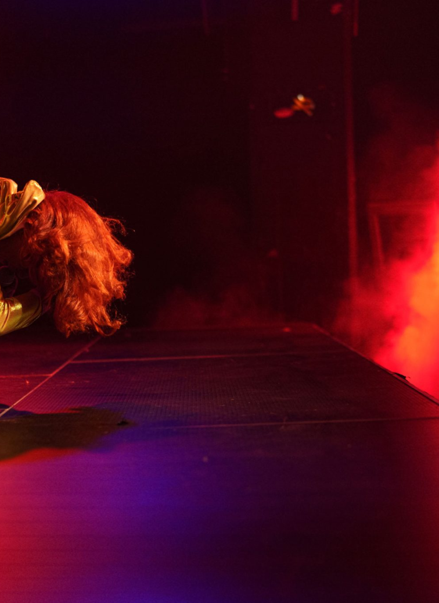
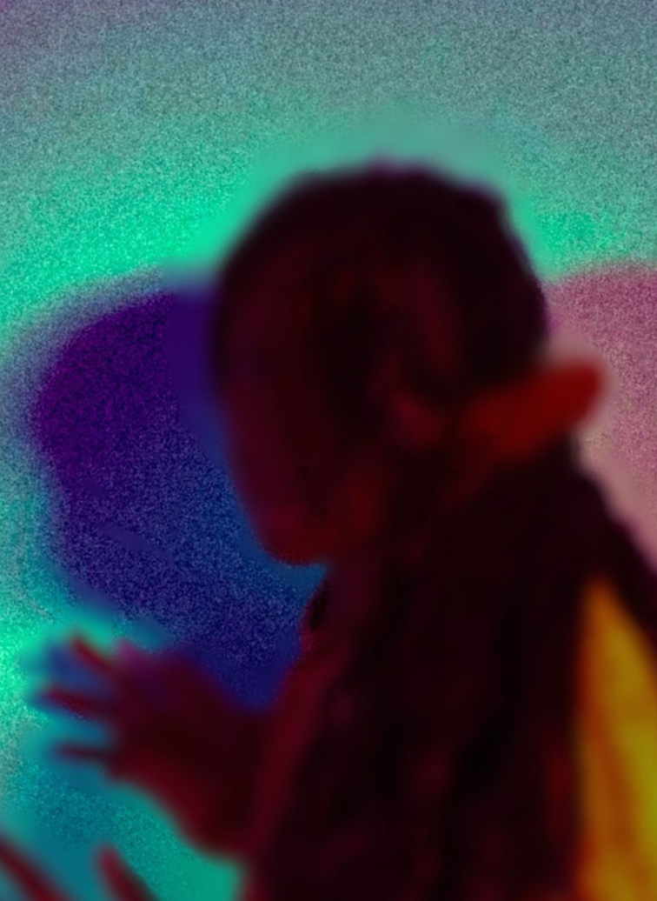

what's on

thu 12 oct 2023
desire marea
[south africa]

thu 19 oct 2023
pumpitopera transatlantica
[brazil]
"transform has changed the way audiences experience leeds"
the guardian
what's new

One month to go — With one month to go until Transform 23, we’re today announcing a series of new commissions, DJ sets and immersive encounters to deepen your experience of the festival.

If walls could talk — Opening the festival alongside Ásrún Magnúsdóttir’s SECRETS, Transform’s Young Curators present IF WALLS COULD TALK.
opportunities
sottobosco: workshop call out
volunteer call out
join the distorded rap choir